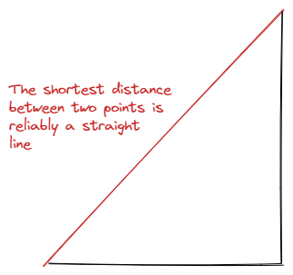

Advice I often give
Advice is offensive, not because it lays us open to unexpected regret, or convicts us of any fault which had escaped our notice, but because it shows us that we are known to others as well as to ourselves; and the officious monitor is persecuted with hatred, not because his accusation is false, but because he assumes that superiority which we are not willing to grant him, and has dared to detect what we desired to conceal.
— Samuel Johnson
I haven’t detected anything in you and I don’t mean to assume any sort of superiority, but I believe that if you rant about something more than three times you should write it down. Here are a few suggestions I’ve often repeated to my friends which I’m passing along for your consideration:
1. How not to choose a career
We are what we pretend to be, so we must be careful about what we pretend to be.
— Kurt Vonnegut, Jr., Mother Night (1962)
The rich man thought he was hoarding freedom, but he couldn’t stop and in the end it all turned out to be money.
— James Richardson, Vectors 3.0: Even More Aphorisms and Ten-Second Essays
Reputation, reputation, reputation! O, I have lost
my reputation! I have lost the immortal part of
myself, and what remains is bestial.— Cassio, Othello, II:iii
Two concepts that have helped me make career decisions are:
- Rene Girard’s theory of mimesis
- Optionality
Mimesis
Be wary of the extent to which your desires are not really your own. On Rene Girard’s view, desire is mimetic. He sees the human world as a theatre of envy where we mimic each other’s desires and actions. It’s like a big game of monkey see, monkey do. Only by looking to others do we figure out what we should want and how we should act. Girard thinks mimetic behavior is the root of all human conflict because when we all want the same thing, we compete with each other. Like lions in a cage, we mirror our enemies, fight because of our sameness, and ascend status hierarchies instead of providing value for society.
Mimetic desire rears its head in the job market of the 21st century as ambitious young people strive to secure prestigious jobs at goliath firms. The drive for prestigious positions is highest amongst high-status people. A series of studies by researchers at the University of Queensland found that, “relative to lower-class individuals, upper-class individuals have a greater desire for wealth and status…it is those who have more to start with (i.e., upper-class individuals) who also strive to acquire more wealth and status.” A more recent set of studies led by Cameron Anderson at the University of Berkeley, titled ‘The Possession of High Status Strengthens the Status Motive’, also supports the idea that high-status people care the most about status. They found that social class, measured in terms of education and income, were positively associated with the desire for social status. People with more education and money were more likely to agree with statements like “I enjoy having influence over other people’s decision making” and “It would please me to have a position of prestige and social standing.” In short, people who are well-off care the most about others’ opinions of them.
Ambitious young people all too often want to work for The Big Three (consulting), or The Big Three (law), or The Big Four purely because those jobs are conventionally prestigious, ensnaring them in a mimetic trap. This trap is dangerous for career for two reasons. First, your prestige is not your own. You’re reliant on your employer for clout and opportunities. Second, you’re willfully blind to underpriced opportunities. In the market for social and professional clout, prestigious firms are either accurately priced or overpriced by the market. That’s why they’re prestigious. Working for prestigious firms is like investing in an S&P 500 ETF. The index fund will do very well for itself, even beating the market in the long run, but to have an outsized impact you have to bet on something underpriced. (There’s another sense in which working at big firms is like investing in index funds: The growth of index funds may be good for the individual investor, but it may harm the market in the aggregate because the increase in passive investing dilutes the power of smart money…). The world is filled with underpriced opportunities that are only available to those who are comfortable with promising but low status projects. You should ask yourself: what opportunities can’t you see because they’re not prestigious enough?
Optionality
Optionality is the ability to keep your options open. It’s like having a wild card: you don’t have to play it, but when the right moment comes, you can win the round. In finance, contracts called options are that wild card. They give you the right, but not the obligation, to buy or sell an asset at a specific price on or before a certain date. This lets you hedge against market risks.
Mihir A. Desai, a Professor of finance and law at Harvard, wrote an essay called ‘The Trouble with Optionality’ where he describes the insidious effects of financial jargon slipping into popular usage, “morphing narrow financial terms into much more general ways of understanding the world.” Desai says the desire of ambitious graduates to work for big law, finance, and consulting firms is fueled by a desire to increase future optionality. These vocations give graduates future career options because of the broad exposures to industries and companies and skills these jobs develop. However, Desai argues this emphasis on creating optionality is pernicious when acquiring options becomes habitual. He says:
You can never create enough option value—and the longer you spend acquiring options, the harder it is to stop.
The shortest distance between two points is reliably a straight line. If you know the sort of work you would enjoy doing and an opportunity to do that work presents itself to you, take it. If you’re capable of getting into a graduate program at a conventionally prestigious firm, you’re probably capable of landing a job in the field where you want to end up.

There is a further point. The opportunity cost of maximizing optionality is forgone compounding interest. If you move from place to place, acquiring credential upon credential, you miss out on building trusting and challenging partnerships. Sure, you force re-pricing by getting a salary bump/title change, but you mark a whole bunch of other items to zero: internal relationships, organisational understanding, accumulated trust, goodwill, etc. Appreciation of these other assets isn’t linear, so changing during a plateau can ruin appreciation unrealized, just on the horizon. You don’t have unlimited pricing events, so choose wisely. And remember: all good things to compound interest.
2. How to buy a suit
You need a suit. There will always be funerals. There will be weddings. There may be trials. There will be galas, if you’re lucky.
— Glenn O’Brien
The context and connotations of suits have changed, but their basic form hasn’t. The suit’s insistent longevity testifies to the dynamism of its composition. No one has yet devised a surrogate garment or ensemble affording such a complete yet variable envelope for the body.
Where do you start? You need at least one death and seriousness suit, which shouldn’t be black, but very dark grey (which is culturally blacker than black). According to no-one but myself, you should resist the temptation to be too dramatic with your first suit. Creative formalwear is anything but; it’s so that people with nothing to say will have something to talk about.1 Dare to conform!
1 I’m not against non-conformity per se, but when starting out it’s best to veer towards conforming to what lasts, because it will endure.
In your exposition to buying suits, the danger of not conforming is that it can easily become meaningless if you don’t know what you’re doing. Noam Chomsky has this line: “colorless green ideas sleep furiously.” It’s an example of a sentence that makes grammatical sense but means nothing. In the same way, you can make an outfit that makes grammatical sense, but socially it means nothing. Even if you’re trying to be counter-cultural, you can’t be punk if you don’t know precisely what you’re punk-ing.
The dark grey suit can be accessorized with a white dress shirt and a dark tie for uptown, black turtleneck or T-shirt for downtown. Grey trousers are the quintessential odd trouser too. Such flexibility makes charcoal the swiss army knife of men’s suits.
Navy also gets the professional’s nod. A man should have a navy suit for when he wants to look sincere. But navy’s starkness accentuates a pubescent face whereas charcoal complements more people’s complexions. If, however, you discover navy flatters you, by all means start there. Navy has a leg up on most grey suits in that it more readily dresses up.
Your first suit should be single-breasted. Two buttons. Notch lapels—which should span at least half the distance between your collar and shoulder. Side vents, not centre. The centre vent attracts undue attention to one’s exposed derriere. I prefer to cover my ass—and speaking of:
- While you’re in the store, check the jacket is long enough. When your hand is dropped at your side, the bottom of the jacket should line up with your outstretched thumb. N.b., a tailor can shorten sleeves with comparative ease.
- Next, check the jacket doesn’t hang over the edge of your shoulder or pinch upwards towards your neck. These misfits can be remedied, but they are comparatively more difficult than shortening a sleeve or taking in the waist.
- At the back, the jacket collar should be at such a height that at least half an inch of shirt collar shows above it while fitting snugly to the shirt. Beware the collar gap! Again, a tailor could salvage a collar gap if everything else fits…
- The waist should be slightly suppressed, but not so tight that an “X” forms on either side of the fastened waist button. The waist of a jacket can easily be taken-in, but only a certain carpenter from Nazareth could take it out. When buttoned, the jacket should be roomy enough for you to sit down comfortably—although no style points are lost for unbuttoning a jacket when seated.
If you can take a hint, you’ve gathered that a visit to the alterations tailor is on the cards. Proper fitting works marvels for an inexpensive suit while a poor fit can ruin even the most exquisite bespoke commission. (Although a suit that is bespoke and yet ill-fitting is a contradiction in terms, or, at least, a funny thought). Bring a shirt with the correct sleeve length and collar height, as well as dress shoes with the proper heel height. When you’re in the fitting room, put your wallet and phone in your pockets. The suit can be altered to mask their protrusion.
When you leave the tailor, the jacket sleeve should hang straight with no horizontal wrinkles or breaks on the upper arm, tapering off towards the wrist and stopping before the wrist meets the hand. If your arms are on the short side, ½ inch of shirt cuff can peep out below the coat sleeves. If longer, ¾ inches to 1 inch gives the arm a better proportion. The band of linen between the sleeve and hand is one of the details that define the sophisticated dresser.
Mr. Alan Flusser, that great arbiter of men’s dress, once declared that the cardinal rule of trousers is to wear them as high on the waist as comfort permits. Like all cardinal rules, it has the distinct advantage of being both perfectly true and perfectly useless. Trousers should rise high enough to meet the jacket’s buttoning point, yet not so high as to suggest you are attempting to wear them as a waistcoat. Does this mean you should hike your trousers into your well-concealed derriere? No, a wedgie does not elegance make.
If you do nothing else, have your tailor hem the trousers and—for time-honoured balance—add a cuff. Whether or not you add a cuff is, of course, largely a matter of personal taste. Your taste notwithstanding, some things to keep in mind vis-à-vis cuffing: First, pleated trousers almost cry out for cuffs whereas flat-fronts can go either way. Second, cuffs should be 1 & 5/8 inches for a man under five foot ten inches and 1 & ¾ inches if taller. (N.b., These quantities are guidelines for you. A tailor worth their salt is not measuring, they are harmonizing to your proportions. Find a tailor you trust and you need not know a damn thing except how to articulate your taste—and good luck with that). Finally, if you have any lingering doubts, go with the cuff. They can be removed later but they can’t always be added. The usual cost for hemming and cuffing at the dry cleaner’s tailor is $30 and the ROI is worth millions.
I say splurge.
3. How to buy a watch
How sour sweet music is,
When time is broke and no proportion kept!
So is it in the music of men’s lives.— Richard, Richard II (V.v.42–44)
As a Shakespeare–quoting theorist of the bourgeoisie, I like my jewels inside the watch case. It’s about inconspicuous consumption. The watch is jewelry with an excuse: we need to know the time and the wristwatch is more elegant than an iPhone or a FitBit.
Before buying a watch you should know the difference between mechanical and quartz watches, but you can read about that elsewhere. Suffice to say mechanical watches are less accurate than their quartz counterparts. (If you want to see a bunch of rich people argue, go to a country club and ask everyone for the time). A watch that costs as much as a luxury automobile does a substantially worse job of keeping time than a $20 Casio. And the prohibitively expensive watch probably doesn’t have a calendar, stopwatch, or an alarm that plays Für Elise. But there’s a nostalgic charm to mechanical watches that’s endearing. They’re interesting for their indulgence in complex obsolete technology. The mechanical watch must be wound, unless it winds itself, but that’s the point: it’s intimate.
Aurel Bacs, a legendary watch auctioneer, says:
It has something to do with the way our society evolves: everything becomes more and more perfect. I mean, look at my mobile phone here on the desk. It looks exactly like yours. I cannot tell you a story about it. And when it’s broken, we throw it. Vintage watches bring us back to times that we miss—times when things maybe weren’t perfect, but done with love.
So if you dig it, how should you buy your first watch? As with other luxury items of conspicuous consumption, watches are all too often about brand. But real luxury is the comprehension of quality, which, as the chef in that animated movie about a cooking rat said, can come from anywhere (and at any price). Brand is only a proxy for quality. Quality itself is found in a watch’s history, design, build, and movement.
History
Rolexes haven’t always adorned finance-bros; they were once tools. Many brands now synonymous with luxury got their big break making timepieces for military, diving, and spaceflight. Such origin stories make for rich histories.
Yet many brands with rich histories fly under the radar of the uninitiated—brands like Seiko, Yema, and Hamilton, for example. Look for brands with deep roots, not necessarily those with the tallest flowers, and be wary of those moored shallowly. Fashion watch brands lack horological significance. They’re often overpriced too. It’s Economics 101, baby. Information asymmetries lead to inefficient outcomes and fashion watch brands target newcomers, who know nothing. Go where demanders are informed and competition among suppliers is fierce. Besides, in all likelihood what you like about a fashion watch are its looks, which are undoubtedly plagiarized. Why not buy the genuine article? Reject Daniel Wellington; embrace the, often-imitated but never replicated, Max Bill.
For a first watch, I’d also suggest staying away from even the most reputable “micro-brands,” because they too lack history. Further, you’ll need to service your watch (more on that later) so it’ll be a damn shame if you can’t find a mechanic who knows how your engine works, or, god forbid, your watchmaker is out of business.
Design
Sure, style is—to some extent—a matter of personal taste, but for my money I’d nudge you towards classic design. The ruins of Greece and Rome are still emulated in the best contemporary architecture. Why? Because classical architecture is beautiful, has remained beautiful for at least 2,000 years, and likely will continue to be beautiful for many years to come. Classical architecture is “Lindy,” where “Lindy”—or the Lindy Effect—describes a phenomenon among certain non-perishable goods (architecture, ideas, e.g.) where life expectancy is proportional to current age, so that every additional period of survival implies a longer remaining life expectancy. Where “Lindy” applies, the mortality rate decreases with time. Find Lindy designs which have stood the test of time. Odds are they’ll look just as good in the years to come.
Build quality
Hunter S. Thompson re-wrote The Great Gatsby word-for-word because he wanted to know how it felt to write a great novel. For your edification, go to a high-end retailer and try on a nice, mid-range, oh-mamma, now-we’re-cooking-with-gas watch. Nothing so dear that they’ll require a credit check. Something like an Omega Seamaster Aqua Terra. Feel the heft of it. See the crisp edges between the brushing and polishing, the carvings etched into the rotor, the sunburst across the dial. The devil is in the details. So too is God. Yes, your wallet should set your expectations, but there are pockets of excellence among entry-level watches featuring the earmarks of craftsmanship straight from the top drawer. Get a feel for quality so you know it when you see it.
Movement
Mechanical watches are like cars: the real cost is in the upkeep, so pay attention to the engine. Some movements are works of art in-and-of themselves; gazing upon them through the glass case-back is like popping the hood on a Porsche 980/01. But you shouldn’t learn to drive in a Porsche. You want something that just keeps buggering on—the Toyota of timekeeping. Something that doesn’t break the bank when you take it into the shop. Look for ETAs, Miyotas, 6R15s, STPs. “Gibberish,” you say? Get on Reddit! See what other people have to say about the movement in the watch you’re eying up.
For your first watch, beware the in-house movement. The renaissance of in-house design presents an exciting next step once you’ve got a foothold, but, especially when you live in NZ, you don’t want to pay for insured shipping to Germany or California every three years. Splurge on additional straps instead.
…Which brings us to that question: how much should you spend on a watch? Spend enough that you don’t need to take your watch off when you’re washing dishes, and don’t spend so much that you need to take your watch off when you’re washing dishes. It’s up to you. And how you wash dishes.
Further notes:
- When buying vintage, buy full sets only. Box and papers.
- Fit is king.
- Quartz is not the devil. People that eschew quartz are cads at best and charlatans at worst. Connoisseurs adore G-Shocks.
4. How to cook long-grain rice
- Buy a rice cooker.
- Pour rice into the bowl of the rice cooker (~1/2 cup (long-grain) uncooked per person). Wash rice before covering with enough cold water so that if you place your index finger on top of the rice the water reaches your first knuckle.
- Return bowl to rice cooker, cover, and turn on rice cooker.
- Once done, fluff rice with fork. Look forward to seeing yourself flourish as a cooker of rice.
Sans rice cooker:
- Pour rice into saucepan (~1/2 cup (long-grain) uncooked per person). Wash rice before covering with enough cold water so that if you place your index finger on top of the rice the water reaches your first knuckle.
- Bring pot to boil. Once boiled, turn off stove and cover. Leave to steam for 12 minutes.
- Once done, fluff rice with fork. Look forward to seeing yourself flourish as a cooker of rice.